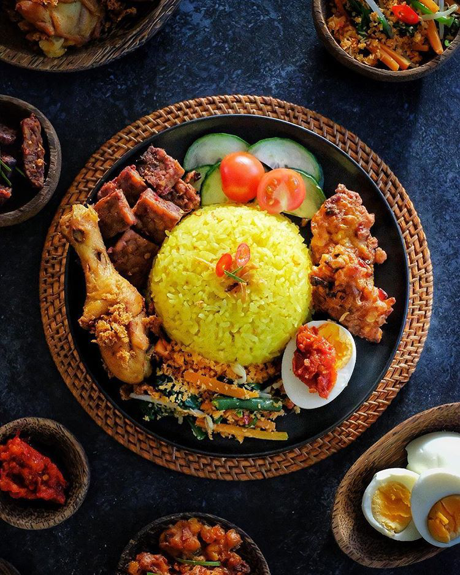

Bahan :
Beras 1 kg,
Santan 900 ml,
Kelapa tua 1 buah,
Kunyit 5 cm,
Serai 2 batang,
Daun salam 4 lembar,
Jahe 5 cm,
Lengkuas 2 cm,
Bawang merah 5 buah,
Daun pandan 2 lembar,
Garam 4 sdt.
Cara membuat :
Cuci hingga bersih beras kemudian rendam beras dalam air bersih.
Haluskan bumbu yakni kunyit,,jahe, lengkuas, bawang merah, dan garam.
Bumbu yang sudah dihaluskan kemudian masukkan dalam santan dan aduk hingga rata.
Masak santan hingga mendidih.
Buang air rendaman beras kemudian tuang santan ke beras dengan disaring.
Masukkan dan salam dan serai. Rebus beras dengan api kecil. Selama direbus aduk terus hingga air menyusut dan beras hampir menjadi nasi. Kira-kira tingkat kematangan sudah mencapai .
Ambil daun salam dan serai dari dalam beras yang hampir matang.
Siapkan panci untuk mengukus, rebus airnya dulu.
Masukkan nasi ke dalam panci pengukus.
Tambahkan daun pandan.
Kukus nasi hingga benar-benar matang atau istilahnya tanak.
Jika ingin membentuk nasi, tunggu dulu hingga dingin. Biarkan nasi dingin dengan memakai suhu ruangan.
Kembali